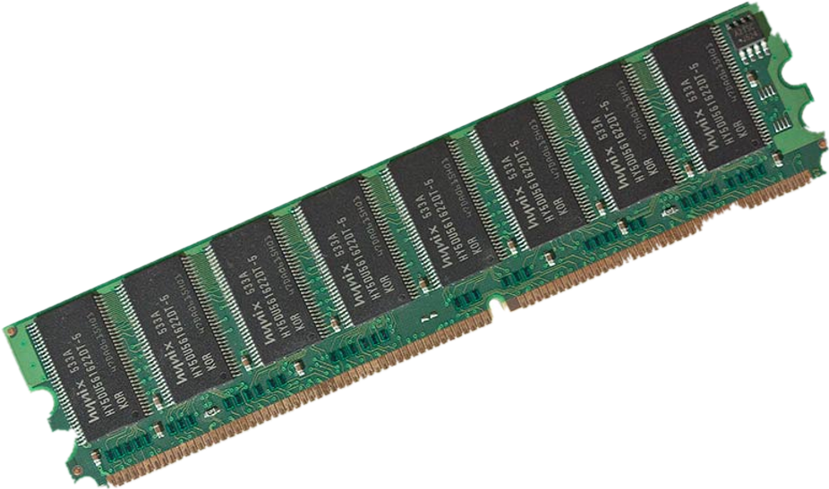

Оперативная память (ОЗУ)
Оперативная память - устройство для данных, которые обрабатываются процессором в текущем сеансе работы.
Когда идет работа оперативной памяти и производится запись информации в какую-то ячейку, то все данные, которые были там до того, будут утеряны безвозвратно. Нужно заметить, что современные операционные системы поддерживают разбивку оперативной памяти сразу на несколько разделов, это обеспечивает заметно повышенную скорость работы. Как все это функционирует? Дело в том что современные устройства ОЗУ имеют большой объем, а потому в них могут размещаться данные сразу нескольких процессов, работающих одновременно. Разумеется, центральный процессор также способен обрабатывать по нескольку сотен задач за один раз. Чтобы обеспечить при этом нормальную работоспособность компьютера, была разработана система динамического распределения памяти. В этом случае для каждой задачи, которая в данный момент стоит «на рассмотрении» у центрального процессора, отводится свой, динамически изменяемый блок оперативной памяти.